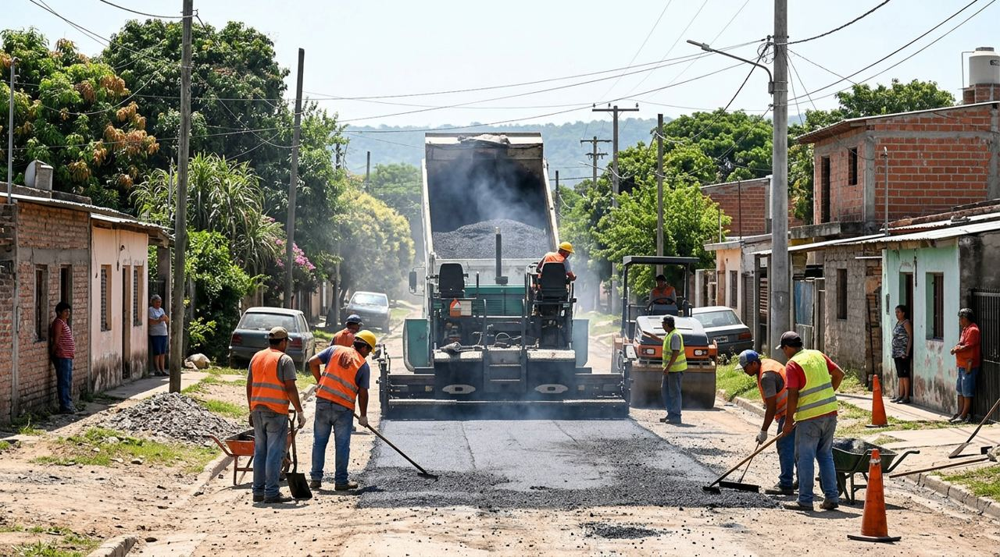
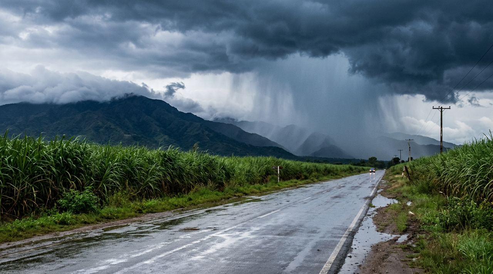
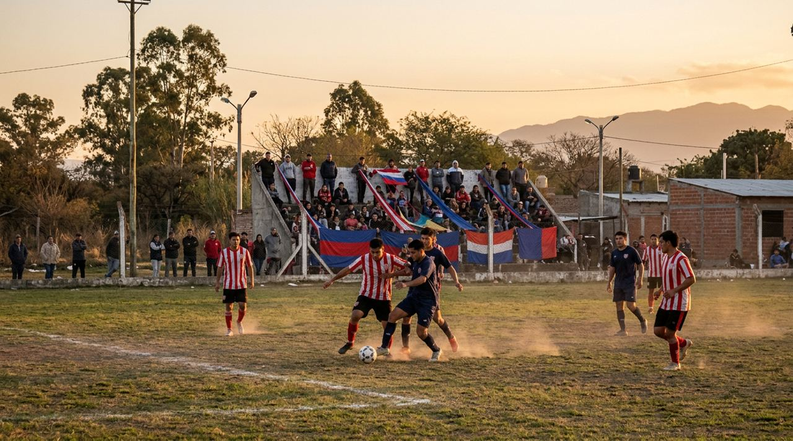
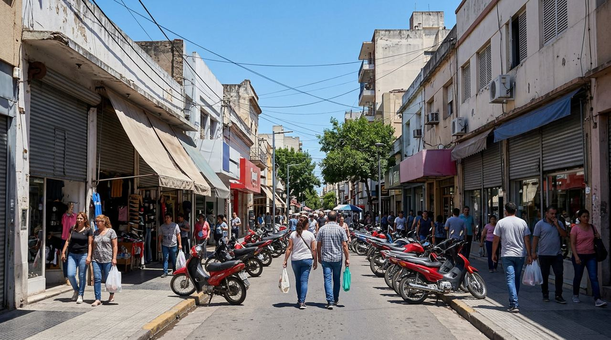
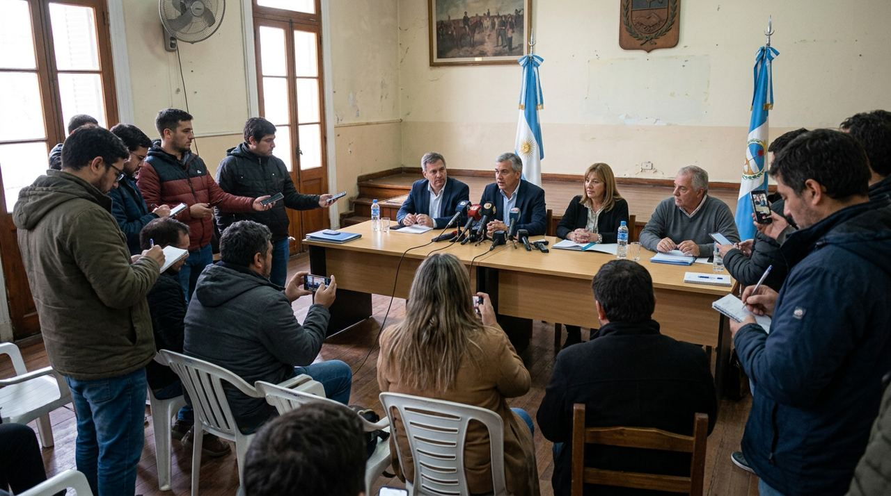
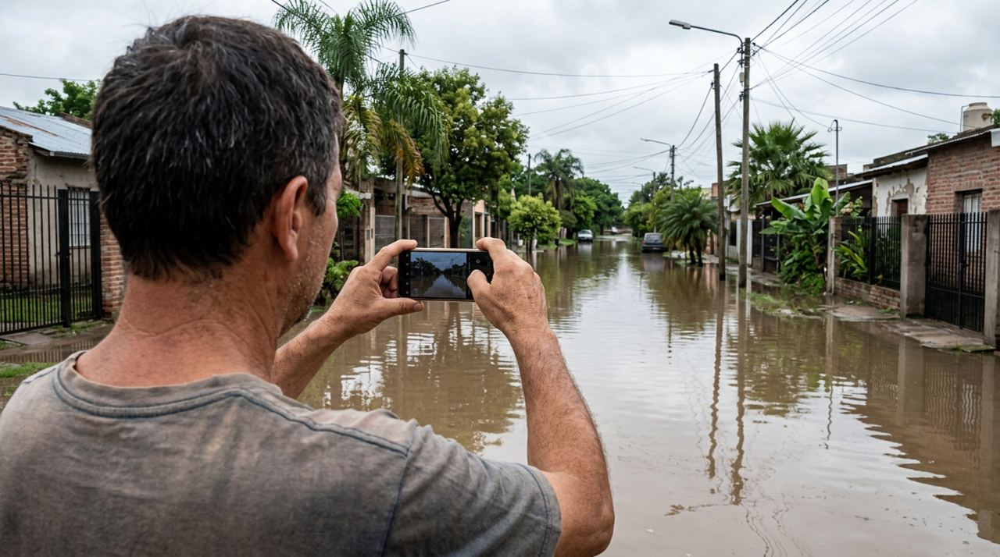

La zafra entra en su último mes: piden precaución en la ruta 38 por el tránsito de camiones cañeros
Los ingenios del sur trabajan a pleno hasta mediados de noviembre. Tránsito recomienda circular con luces bajas y no adelantarse en las curvas.
Los ingenios del sur trabajan a pleno hasta mediados de noviembre. Tránsito recomienda circular con luces bajas y no adelantarse en las curvas.


Materiales para tu obra con entrega en Concepción, Alberdi y Aguilares.




Llegó por WhatsAppUn vecino mandó fotos y un audio de un minuto al WhatsApp de la radio. Con eso se armó la nota, que la radio revisó antes de publicarla.
Mandá tu foto o audio Nota armada con IA a partir del audio del vecino y revisada por la radioDe turno hoy hasta las 24 h. Envíos sin cargo en el centro.
EscribinosSumá la web a tu tanda: tu banner en la portada, dentro de las notas y en el reproductor que la gente deja sonando todo el día.
Ancho, arriba de todo. Lo ve cada persona que entra.
En el medio de cada nota local, mientras se lee.
«Metro Noticias, presentado por tu marca», todo el tiempo que suena.
Tu tanda en la radio y tu banner en la web, en un solo precio.